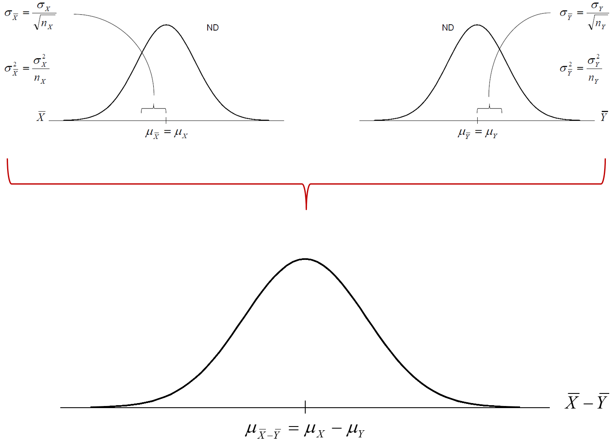
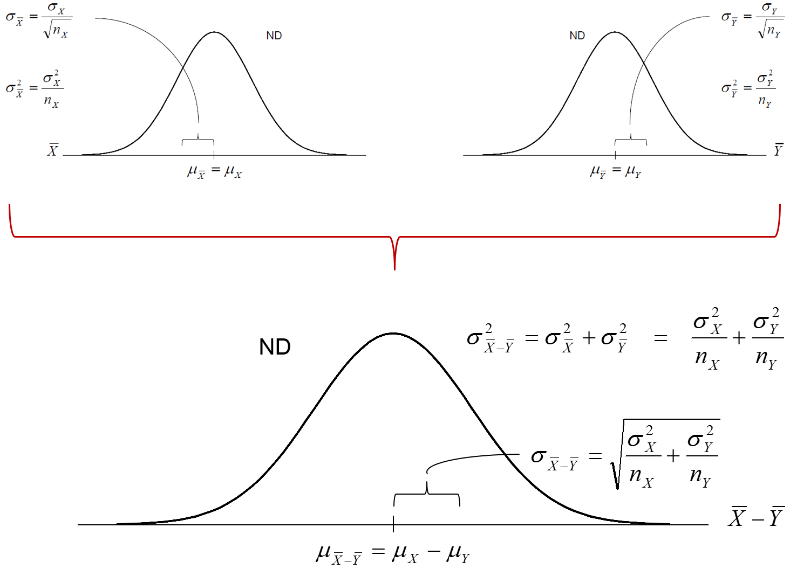

PSQF 4143: Section 12

Brandon LeBeau
| Experimental | Control | |
|---|---|---|
| n | 50 | 50 |
| \(\bar{X}\) | 35 | 31 |
| \(\sigma\) | 8 | 6 |

\[ \sigma_{\bar{X}_{E} - \bar{X}_{C}} = \sqrt{\frac{\sigma_{E}^{2}}{n_{E}} + \frac{\sigma_{C}^{2}}{n_{C}}} \] - What is the \(Pr(\bar{X}_{E} - \bar{X}_{C} \geq 4)\)? \[ z = \frac{(\bar{X}_{E} - \bar{X}_{C}) - (\mu_{E} - \mu_{C})_{HYP}}{\sigma_{\bar{X}_{E} - \bar{X}_{C}}} \]
 

| Experimental | Control | |
|---|---|---|
| n | 50 | 50 |
| \(\bar{X}\) | 35 | 31 |
| \(S\) | 8 | 6 |
| A | B | |
|---|---|---|
| n | 10 | 24 |
| \(\bar{X}\) | 115 | 105 |
| \(S\) | 14 | 17 |
| Experimental | Control | |
|---|---|---|
| n | 50 | 50 |
| \(\bar{X}\) | 35 | 31 |
| \(S\) | 8 | 6 |